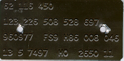

M-plate - Explanation
|  |
| M-plate. |
Every Type 2 that was made in West Germany had an M-plate fixed inside. This plate reveals a lot of information about what the bus looked like when it left the factory. It also tells to which destination the bus was delivered. There are two different spots where the M-plate can be found. It depends on the model year where the plate is fixed:
| 1968-1976 | On metal wall behind left seat
in cabin. This is the drivers seat in Left Hand Drive (LHD) vehicles and the passenger seat in Right Hand Drive vehicles (RHD) |
|
| 1977-1979 | Under the dashboard, left
of the fuse box, on top of the fresh air duct. |
The plate is called 'M-plate' because it tells which option extra's were delivered on the bus. These extra's are identified by codes: the "M-codes". The name doesn't cover the full load of information that the plate gives. it also shows the chassis number, the original paintcolour, the interior trim colour, the planned production date, the (export)destination, the model code and the engien and gearbox that were fitted.
Example
Below is an example of how to read an M-plate.
| 1st line | ||
62 116 450 |
Chassis
number 6 - model year 1976 2 - an extra number to make a difference whith 1960ties chassis numbers which consist of 1 digit less than the 1970ties chassis numbers. 116450 - serial number The full chassis number is actually made by putting the first two digits of the model code in front of the chassis number which is written on the M-plate. In this case the chassis number would be 2662 116 450. The '26' stand for 'VW Pick-up' |
|
| 2nd line | ||
| 123 | M-code: Suppression equipment for radio reception | |
| 226 | M-code: Retaining cables for tailboard | |
| 508 | M-code: With vent window in rear passenger door and in the side window of the passenger compartment. | |
| 528 | M-code: Convex rear view mirror, outer, right | |
| 697 | M-code: Continental tires | |
| 3rd line | ||
| 960977 | Paint and interior | |
| FS9 | Group of M-codes |
|
| H86 | Group of M-codes |
|
| 008 | M-code: Delivered without battery | |
| 046 | M-code: With side turn signals | |
| 4th line | ||
| 13 5 | Planned production
date week 13, day 5 (= Friday), 1976: 6th of March, 1976 |
|
| 7497 | Code for production planning | |
| HO | Destination: The Netherlands ('Holland') | |
| 2650 | Model:
|
|
| 11 | Aggregate:
|
|
Vincent Molenaar
last update: 16.12.2005